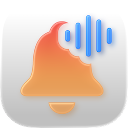
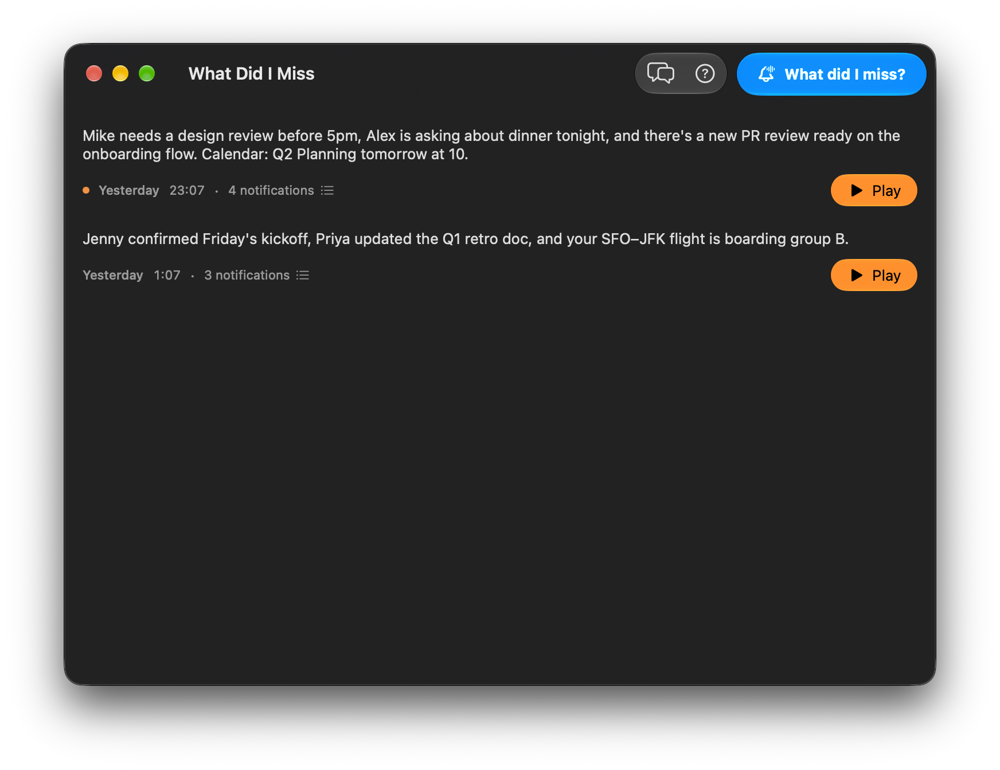

What Did I Miss
A spoken recap of the notifications you missed, right from your menu bar.

One click, spoken summary. Step back to your Mac and let the bell icon in your menu bar catch you up. What Did I Miss gathers every notification you received while you were away, condenses them into a short recap, and reads it aloud — so you can keep doing whatever you were doing.

Replay any recap, see every notification behind it. Past summaries are listed in the main window with the time they were generated and the notification count. Hit Play to hear the audio again — no re-synthesis cost — or open the details sheet to see every notification that was included, with icons, titles, and delivery times.
Summaries run on-device with Apple Intelligence. Related notifications are grouped and distilled into two to four spoken-style sentences. Your notifications never leave your Mac — only the short summary text ever touches the network.
Any voice you like, via ElevenLabs. Bring your own API key and pick from every voice on your account — pre-made, cloned, or from the Voice Library. Choose Turbo v2.5 for balanced quality, Multilingual v2 for other languages, or Flash v2.5 for the lowest latency.
Private by construction. Notifications are read locally from macOS, summarized locally by Apple Intelligence, and never uploaded anywhere. Only the short generated summary is sent to ElevenLabs for text-to-speech — and your API key lives in the macOS Keychain.
Frequently Asked Questions
What is What Did I Miss?
What Did I Miss is a macOS menu bar app that rounds up the notifications you've received while you were away, summarizes them with Apple Intelligence, and reads the summary aloud using an ElevenLabs voice. It's designed for moments when you step back to your Mac and want a quick spoken recap instead of scrolling through Notification Center.
Is this an official Apple or ElevenLabs app?
No. This is an independent third-party app. It is not created, endorsed, or maintained by Apple, ElevenLabs, or any of the apps that deliver the notifications it summarizes.
What does it cost?
The app itself is free. It uses Apple Intelligence on your Mac for the summary (no cost), and ElevenLabs for the voice. ElevenLabs has a free tier that is usually enough for everyday use. You bring your own ElevenLabs API key.
What are the system requirements?
A Mac running a recent version of macOS with Apple Intelligence enabled (required for on-device summarization) and an internet connection (required only for text-to-speech).
Why does the app need Full Disk Access?
macOS stores delivered notifications in a protected SQLite database inside the Darwin user directory. Reading that file requires Full Disk Access. Without it, the app has no way to see which notifications you received.
How do I get an ElevenLabs API key?
Sign in at elevenlabs.io, click your avatar, go to API Keys, and create a new key. Copy it and paste it into Settings → ElevenLabs → API key. The ? button next to the API key field in Settings walks you through the same steps.
Where do my notifications go?
Notifications are read locally from macOS, summarized locally by Apple Intelligence, and never uploaded anywhere. Only the short generated summary text is sent over the network, and only to ElevenLabs for text-to-speech.
Where is my ElevenLabs API key stored?
Your API key is stored in the macOS Keychain. It never leaves your Mac except when the app sends a request to ElevenLabs on your behalf.
Can I replay a past summary?
Yes. Open the main window, find the session in the list, and click Play. Click Stop to interrupt playback. Replayed audio does not call ElevenLabs again — the generated audio is cached per session.
Does the app keep running in the background?
Yes. What Did I Miss lives in the menu bar and stays out of the Dock until you open one of its windows.
Can I trigger a summary from Shortcuts, Spotlight, or Siri?
Yes. What Did I Miss registers an App Shortcut, so you can run it from the Shortcuts app, invoke it by asking Siri, or type a phrase like "What did I miss" or "Catch me up" in Spotlight. Running the shortcut generates the summary and plays it aloud, just like clicking the menu bar item.
What if Apple Intelligence isn't available on my Mac?
Apple Intelligence is required because the summary is generated on-device. If it's not available (hardware not supported, disabled in System Settings, or still downloading), the summary will fail. Enable it in System Settings → Apple Intelligence & Siri and try again.
Do you collect analytics?
The app sends a small number of anonymous usage events (e.g. "app launched", "summary requested") through Aptabase. No notification content, summaries, or personal data are included.